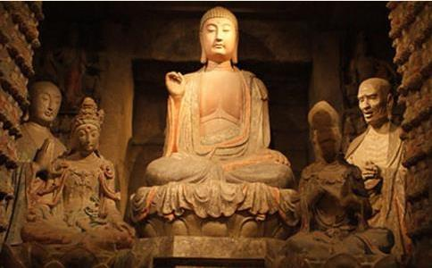

第一位提出灭佛的人是北魏太武帝拓跋焘。北魏的成立可以说是非常不易的。作为少数民族政权，其君主是鲜卑族拓跋氏。
拓跋氏在历经被秦灭国后，忍辱负重多年，最终抓住秦国淝水之战战败，国内混乱的时机，复国成功，并统一北方建立北魏。
拓跋焘在研究北魏的历史后决定增强军队建设，希望能将北魏建成一个全民皆兵的国家。但这时候，问题出现了，佛教徒不用服兵役。不仅不用服兵役佛教徒还不用交税。
你不来当兵就算，还占着国家的土地让国家养着你，这门儿都没有。于是在444年，拓跋焘下令「上自王公，下至庶人，一概禁止私养
本来拓跋焘只是想让
446年，拓跋焘亲自率兵镇压起义，当拓跋焘带兵打到长安时，在一所寺院中发现了大量兵器及钱财。这时的拓跋焘彻底愤怒了。
北魏的建立十分不易，所以拓跋焘对皇权看的很重，不允许任何人冒犯皇权。这座寺庙里的发现让拓跋焘认定佛教与杏城起义有关，于是拓跋焘下令诛杀该寺所有僧众。
事后，拓跋焘又听从了身边的大臣的劝导，决心彻底灭佛并下令「诛戮长安的沙门，焚毁天下一切经像」。这便是第一次灭佛运动。
北周武帝灭佛在经历了第一次灭佛运动后不到两百年，又一次的灭佛运动展开了序幕。而这次灭佛的决定者是北周武帝宇文邕。历史上宇文邕是一位明君，为什么他也要灭佛呢？这里面原因复杂，还牵扯出了儒释道三家的地位问题。
要说宇文邕本是当不上皇帝的，因为他不是长子，他是北周文帝宇文泰的第四个儿子。可是他的三个哥哥全被一个人杀死了，这个人就是他的堂哥宇文护。
宇文护本是北周文帝的侄子，文帝临终前让宇文护辅佐自己的儿子。没想到宇文护的野心颇大，只要皇帝小皇帝不按自己的心意办事，他就将其杀死。这一杀不要紧，一口气连杀了三个，不得已宇文邕当上了皇帝。
宇文邕在当上皇帝后，在567年有人上书，希望皇上能抑制一下佛教的传播。宇文邕本身是重视儒家思想的，于是便同意了这个提议。但宇文邕没有独断专行，而是十分民主地将道教、佛教里面的权威人士和大臣召集在一起，大家一起商议一下儒释道的排名问题。
然而这次会议并没有商议出结果。作为「顾命大臣」的宇文护是忠实的佛教支持者，他反对将佛教放在最后，直接导致这次会议以失败告终。
572年，宇文邕诛杀了宇文护，始掌朝政大权。573年，宇文邕又召集臣、道士、名僧进行第二次辩论。按照宇文邕的意思，希望儒教为先，道教为次，佛教为后。然而这次会议又没能如宇文邕所愿。
原因在于这次请来的高僧辩论水平太高，硬是揭穿了道教
于是宇文邕也不打算维护道教了，直接下令「断佛、道二教，经像悉毁，罢沙门（即僧尼）道士，并令还民」。
同年六月宇文邕下令建立通道观，这通道观内饰儒释道三家的名流，任务是探寻三教的真意，弥合三教的分歧。这就是第二次灭佛运动。
唐武宗灭佛而第三次灭佛运动竟然是发生在民风开放的唐朝，这次下令灭佛的是唐武宗。
掀起
但随后的唐穆宗、唐敬宗、唐文宗就不行了，他们依旧依旧推崇佛教，但朝廷腐败，朋党斗争，国势日衰。不仅如此，佛教的兴盛还使得僧尼之数继续上升，寺院经济持续发展，大大削弱了政府的实力。而且很有许多罪犯为逃避法律选择
等到唐武宗的时候，国力大不如前，842年，唐武宗不得已下令灭佛：「僧尼中的犯罪者和违戒者
844年，唐武宗再次下令，「敕令毁拆天下凡房屋不满二百间，没有敕额的一切寺院、兰若、佛堂等，命其僧尼全部还俗。」
可以看出，唐武宗的灭佛还是有针对性的，并没有「一竿子打死」。只是要求犯罪和违反戒律的僧人还俗接受应有的惩戒，拆除的寺院也都是规模较小僧人较少的。可以说唐武宗的灭佛更加人性化。
后周世宗灭佛最后一次灭佛运动发生在后周。后周世宗柴荣个人没有任何宗教的爱好，这次的灭佛更像是为了经济。
后周时期，战争不断，后周的政权也在风雨飘摇中。柴荣登基后，国家经济状况很差，根本无力支持后周南征北战和稳固政权。于是柴荣想到了寺庙。
公元955年，柴荣下诏开始禁佛。其中规定：不许私度僧尼，不许无侍者的出家，出家必须考试和国家批准，禁止烧身焚指等
柴荣这次灭佛较前三次相比更为仁慈。柴荣没有对僧人大开杀戒，只是将寺院的土地收归国有。那些收集上来的铜器也都被从新铸造成铜钱，用于
三武一宗灭佛运动的起因多是为了巩固皇权，增强国力。灭佛运动的规模也是越来越小。其中很有意思的一点，在每一次灭佛运动后，下一任皇帝都会再一次扶持佛教，恢复佛教的地位。一句话，神权必须服从王权，宗教必须为封建统治服务。